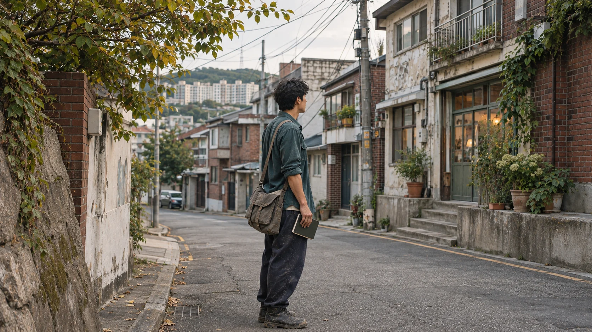

개발금융 · PF
브릿지론·본PF의 여신승인신청 자료를 작성하고 인출선행조건을 관리했습니다. 미분양담보대출 실행·만기 연장에 필요한 계약과 증빙도 준비했습니다.
- 브릿지론·본PF의 여신승인신청, 대출 인출선행조건 관리
- 생활숙박시설·타운하우스·복합상업시설의 미분양담보대출 실행·연장 관련 서류 준비
이건호 부동산 개발·개발금융 실무자
개발사업의 여신신청·사업수지·인허가·계약·분쟁 대응을 맡아, 금융조건과 현장을 함께 살피는 개발·개발금융 실무자입니다.

한연개발 개발사업부 시행사업팀 · 2021.12~2023.06
금융서류, 사업수지, 협의와 현장 대응.
각 업무에서 맡은 역할과 검토 범위를 함께 전합니다.

조건을 확인하고,
사업의 다음 단계를 준비했습니다.
개발사업 PM·시행·자금관리 업무를 맡아 여신신청 자료, 사업수지 검토자료, 계약과 협의에 필요한 문서를 준비했습니다.
브릿지론·본PF의 여신승인신청 자료를 작성하고 인출선행조건을 관리했습니다. 미분양담보대출 실행·만기 연장에 필요한 계약과 증빙도 준비했습니다.
정비사업 2개 구역의 사업비·용역비·조합원 부담금과 추정 비례율을 검토했습니다. 두 구역에서 맡은 공통 업무는 조합 소통, 설명회와 심의 접수였습니다.
도시개발 구역지정 제안 접수를 지원하고 기본설계·사업수지를 검토했습니다. 별도 사업에서는 업무대행사 사업참여 제안서를 단독으로 작성해 제출했습니다.
개발사업의 채권·자금을 관리하고 계약·분쟁 자료를 준비했습니다. 현장 민원에도 대응하며 필요한 유관기관 협조를 요청했습니다.
관심 있는 영역을 선택해 담당 업무와 검토 범위를 살펴보세요.
궤도와 목록은 같은 상세 내용으로 이어집니다.
마우스로 드래그해 시점을 바꿀 수 있습니다. 스크롤하면 다음 내용으로 이어집니다.
재직 당시의 담당 업무와 퇴사 후의 학습·개인 활용을 구분했습니다.
개발사업부 시행사업팀 · 사원/팀원
개발사업부 시행사업팀에서 부동산 개발사업의 시행·PM 및 자금관리를 담당했습니다.
감정평가사 수험 준비를 이어가고, 실무에서 부족하다고 느낀 금융과 건축을 공부해 투자자산운용사와 건축기사를 취득했습니다.
2025년 겨울부터는 아버지의 농사일에도 손을 보탰습니다. AI 도구와 실무 관련 자격 학습도 병행하며 실무에 복귀할 준비를 계속했습니다.

취득 5건과 필기합격 1건을 구분해 표시했습니다.
학사 · 주간 · 학점 3.4 / 4.5
2013.03 입학 ~ 2020.08 졸업
민법·부동산학원론·경제학·부동산공법·부동산공시법을 이수했습니다.
| 자격 | 취득 상태 | 시기 |
|---|---|---|
| 건축기사 | 최종합격 | 2025.06 |
| 투자자산운용사 | 최종합격 | 2024.06 |
| ITQ 엑셀 | A등급 | 2024.01 |
| ITQ 파워포인트 | A등급 | 2024.01 |
| ITQ MS워드 | B등급 | 2026.01 |
한국산업인력공단 · 2025.02 필기합격 상태입니다.
낯선 길에서 만난 사람들, 실무에서 다시 펼친 책, 손을 보탠 논, 요즘 직접 만드는 도구. 지금의 저를 설명하는 네 장면입니다.
AI로 재구성한 가상 인물과 장면입니다. 실제 인물이나 현장 기록이 아닙니다.
영상을 재생할 수 없습니다. 영상 파일 열기
제가 한 일과 맡은 역할을 함께 전하고 더 배워야 할 부분도 숨기지 않으려 합니다.
코로나 이전에는 홀로 아시아를 배낭여행했습니다. 새 여행지에서 만난 배낭여행객들과 일정을 나누다 함께 다니기도 했습니다. 이동과 숙박을 같이 정하고 예상하지 못한 문제는 그때그때 풀었습니다.
부동산을 전공하고 민법·공법·경제학을 오래 공부했습니다. 그래도 실무에서는 처음부터 다시 확인할 일이 많았습니다. 재개발 사업의 비례율과 조합원 부담금을 검토할 때는 엑셀 계산 구조를 다시 세워 비용이 달라지면 부담금이 어떻게 바뀌는지 살폈습니다.
퇴사 뒤에는 감정평가사 수험 준비를 이어갔습니다. 실무에서 부족하다고 느낀 금융과 건축을 공부해 투자자산운용사와 건축기사를 취득했습니다. 2025년 겨울부터는 아버지의 농사일에도 손을 보탰습니다.
자료를 정리하고 문서를 쓰는 반복 업무에 맞춰 개인 작업환경을 구성했습니다. 필요한 기능을 정해 AI에 구현을 지시하고 결과를 확인합니다. 계획, 자료 정리, 작성, 검수의 역할을 나누어 앞 작업의 결과를 다음 역할에 넘깁니다.
퇴사 후 Codex 기반 작업환경에 Claude를 연계해 개인 업무 도구를 구성했습니다.
현재 개인 자료 정리와 문서 작성·검토에 사용하고 있습니다. Gemini 등 다른 모델을 연계한 이미지·문서 처리는 성능과 업무 적합성을 검증한 뒤 확장할 계획입니다.
개인 에이전트의 개발 기록은 GitHub에 공개하고 있습니다. 자료를 다루고 결과를 확인하는 방식을 함께 살펴보실 수 있습니다.